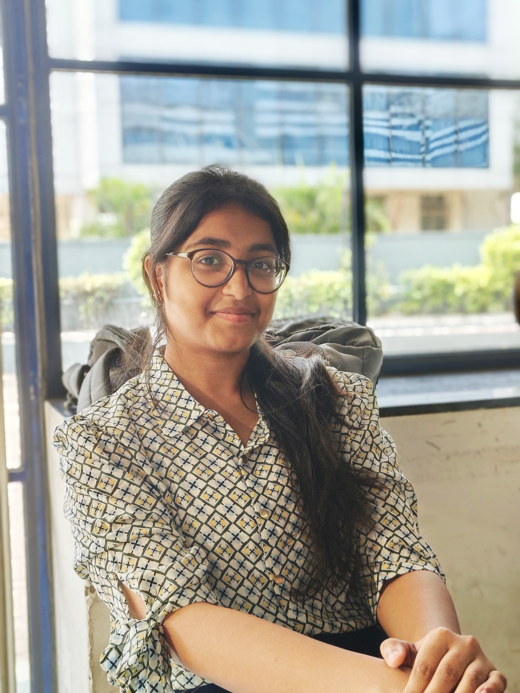
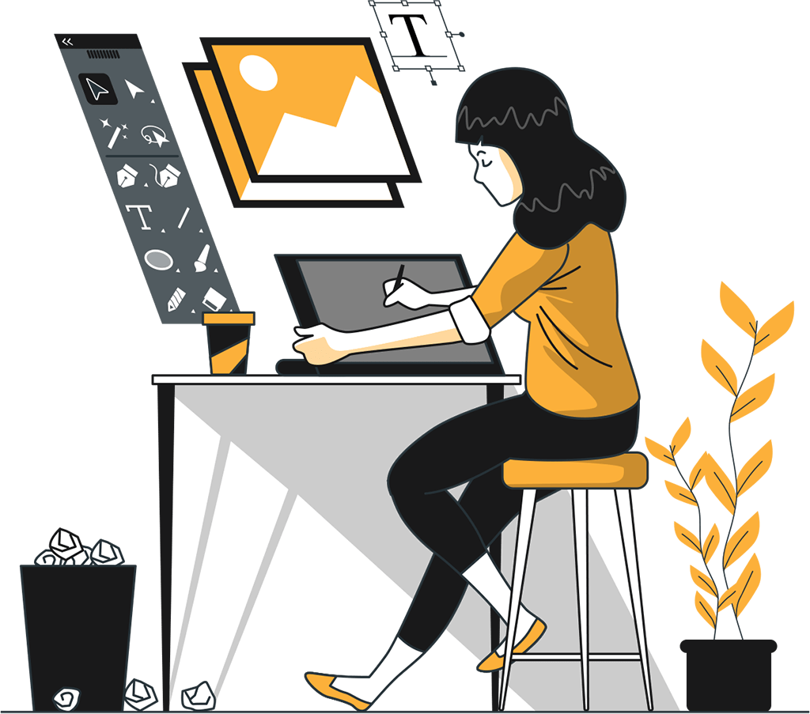

Hi, my name is Anusua
and I am a

Work Experience

Video Editor (2019-2021)
Skilled in crafting compelling visual stories through seamless editing,
color grading, and sound design. Proficient in tools like Adobe Premiere Pro, After Effects,
and Final Cut Pro. Experienced in editing promotional videos, short films,
and social media content with a keen eye for detail and creativity.

Graphics Designer (2021-2023)
Creative and detail-oriented graphic designer with a passion for visually compelling designs.
Skilled in branding, digital media, and print design, with expertise in tools like Adobe
Creative Suite.
Adept at turning concepts into impactful visuals that communicate effectively and leave a
lasting impression.
Graphics Designer (2021-2023)
Creative and detail-oriented graphic designer with a passion for visually compelling designs.
Skilled in branding, digital media, and print design, with expertise in tools like Adobe
Creative Suite.
Adept at turning concepts into impactful visuals that communicate effectively and leave a
lasting impression.
Video Editor (2019-2021)
Skilled in crafting compelling visual stories through seamless editing,
color grading, and sound design. Proficient in tools like Adobe Premiere Pro, After Effects,
and Final Cut Pro. Experienced in editing promotional videos, short films,
and social media content with a keen eye for detail and creativity.